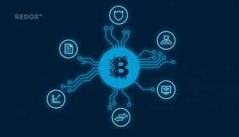

A blockchain is a distributed ledger that is completely open to any and everyone on the network. Once an information is stored on a blockchain, it is extremely difficult to change or alter it. Each transaction on a blockchain is secured with a digital signature that proves its authenticity

Blockchain is a type of distributed ledger technology (DLT) that stores data (commonly immutable and sequenced transaction records) in a decentralized manner via encryption and consensus algorithms. 1 The first widely recognized implementation of blockchain was in 2009 with the Bitcoin public blockchain.The information available to
all network participants is a shared ledger of all information transactions on the blockchain. The consensus
algorithms ensure that information is consistent and immutable across this decentralized network and deter
individual users from adding to ledger information without authorization from the network.